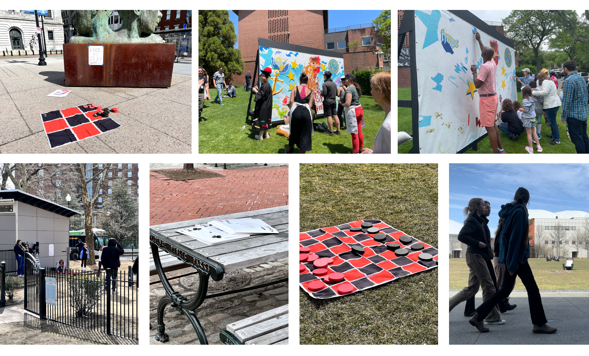
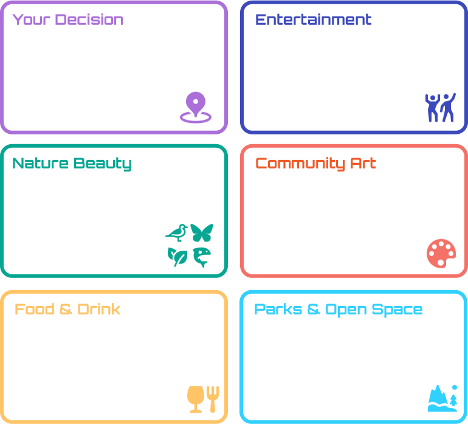
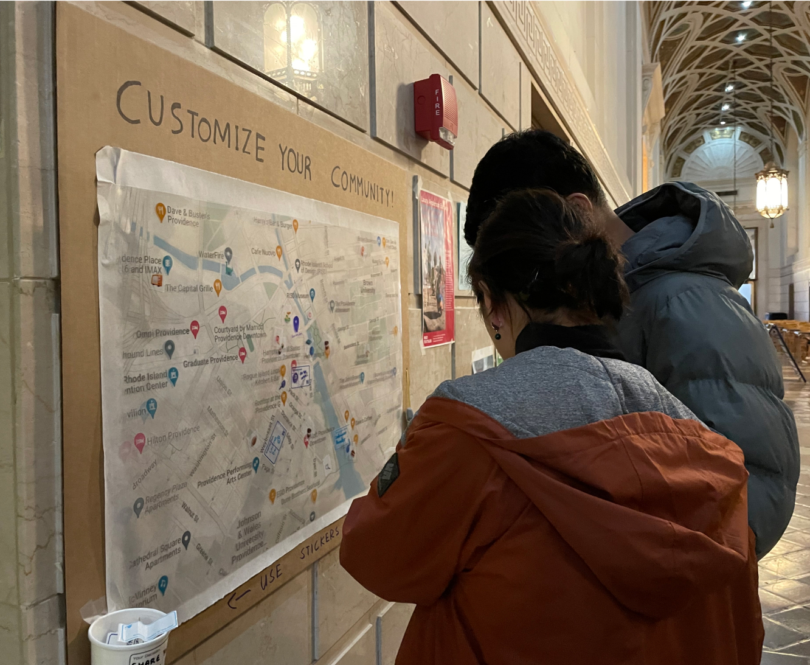
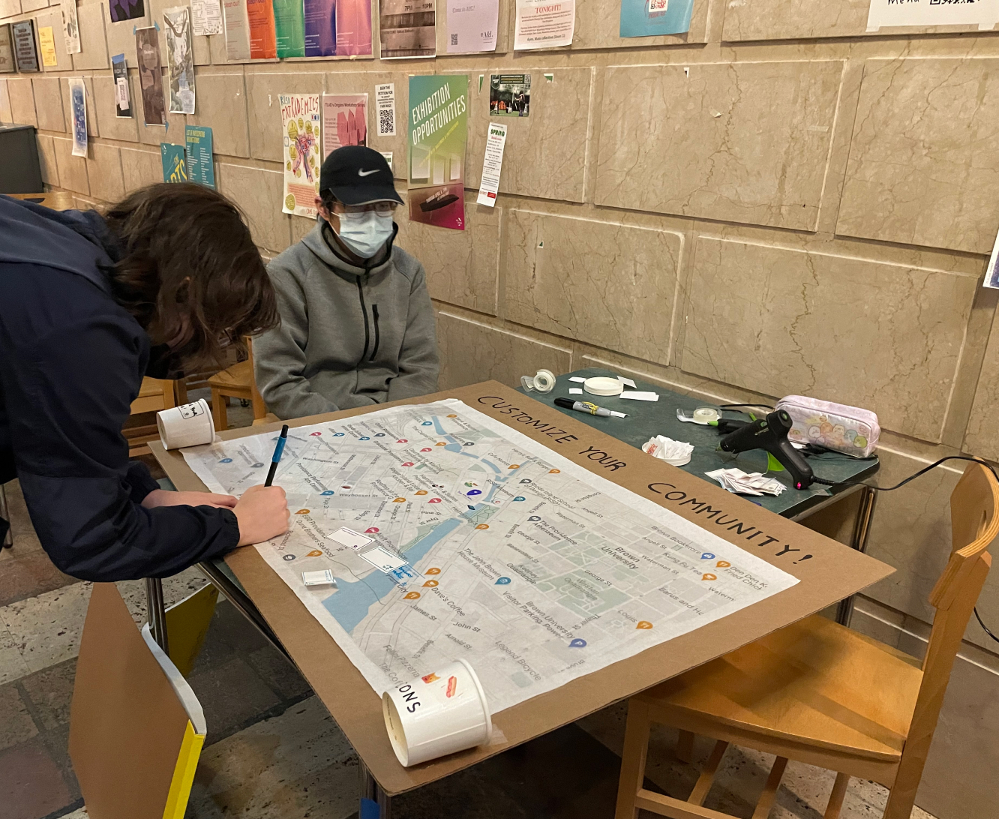
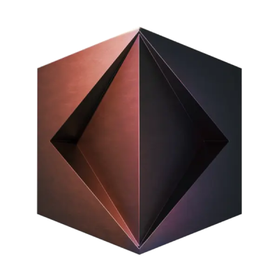
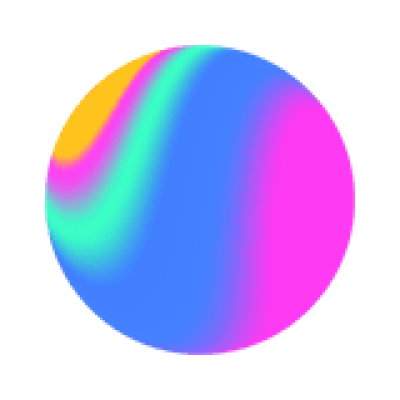

Background
In the city of Providence, a diverse group of passionate residents united with a shared goal—to breathe new life into their beloved community. This dynamic ensemble consisted of college students from distant shores, dedicated long-time locals with bustling schedules, and resilient immigrants striving to find their place in this new land.

Inspired from some interesting public events on Tiktok, we installed checker board and poker cards around areas with busy pedestrian traffics such as park, playground, activity field, and bus stops. We found that:
People don’t tend to stay in one place
People are attracted by music, graphics, and large scale visuals
Simplicity encourages interaction
Social interaction reinforce affiliated tendencies
Discover - "Familiar Strangers"
By observing and analyzing the spectators and participants around lampposts, we found a perfect word to describe them ---- "Familiar Strangers".
Familiar strangers are individuals who share similar behavioral patterns or common interests with a person, even though they are not explicitly connected or familiar with each other.
Milgram specified that “the further removed familiar strangers were from their routine encounters, the more likely they would be to engage in interaction and break the familiar stranger relationship”
Problem
Engaging community members in the ideation process for community building can often be challenging due to limited accessibility and low levels of engagement.

Experiment 1 : Lamppost Engagement
We put QR codes that leads to a survey with one simple question: "Did you see this QR code?" on lamp posts in Providence to test out:
Do people notice the information on the lamp posts?
Do people stop and interact with the information when they walk by?
Experiment 2 : Potential Ways of Interaction
Goal:
1. Test out if people are willing to participate
2. Test out preferable ways for people to convey ideas
Form:
put out maps in the ID building and 15West, providing 2 sets of stickers for them to contribute ideas
Other than the stickers we provided, there are also comments on "other’s stickers", which proved that our familiar strangers are interacting with each other.





Experiment 3 : Effectiveness of AI
Considering accessibility, we decided to provide four addition types of input (text, voice, photo, drawing) to fulfill different scenarios.
Goal:
To test out the effectiveness of AI generated 3D models
Form:
Put people's response into AI and generate it into 3d models & see if people are satisfied with the results.
Here are the detailed testing results:

We also tried out few software that generate 3D model from images or text instructions (prompts) to understand the basic user journey of using AI to express fuzzy ideas.

Kaedim: Magically generate custom 3D models in minutes from 2d images.

Spline AI: Text instructions AI. Generate 3d objects and scenes by describing what you want to create. Modify objects, apply materials, add lighting, and more.